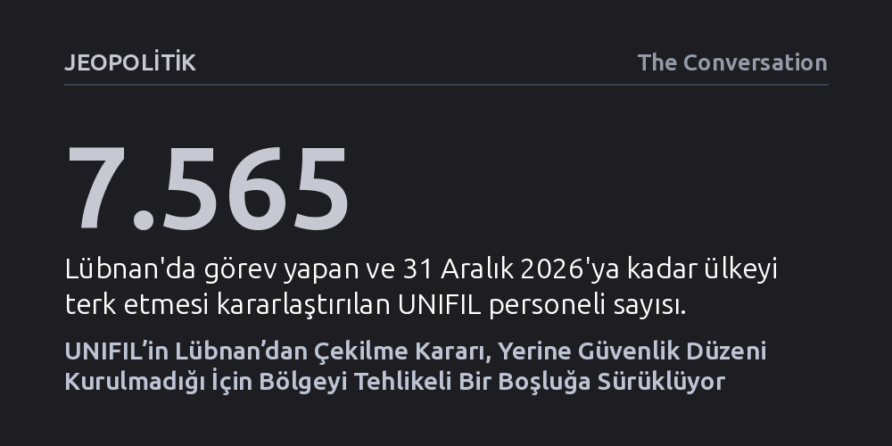

JEOPOLITIK · The Conversation · 2026-10-24
Birleşmiş Milletler’in Lübnan’daki barış gücü UNIFIL’i 2026 sonunda çekme kararı, sahada uygulanabilir bir alternatif bulunmadığı için güneyde tehlikeli bir otorite boşluğu yaratıyor. Hizbullah’ın silahsızlandırılamadığı ve İsrail işgalinin sürdüğü ortamda bu ayrılık, Lübnan’ın egemenliğini ve bölgesel istikrarı doğrudan tehdit ediyor.
Yetersizliği nedeniyle sıkça eleştirilen uluslararası barış güçlerinin bile sahada somut bir diplomatik ve askeri alternatif üretilmeden geri çekilmesinin, mevcut statükodan çok daha yıkıcı bir kaos ve egemenlik kaybı yaratabileceğini gösteriyor.

Birleşmiş Milletler Güvenlik Konseyi, ABD ve İsrail’in baskıları sonucunda Lübnan Geçici Görev Gücü’nün (UNIFIL) görev süresini uzatmama ve misyonu sonlandırma kararı aldı. Bu karar doğrultusunda, yaklaşık 46 ülkeden gelen 7 bin 500'ü aşkın barış gücü askeri, en geç 31 Aralık 2026 tarihine kadar Lübnan topraklarından tamamen ayrılacak. Çekilme süreci, Lübnan ile İsrail arasında onlarca yıllık çatışmaları sonlandırmayı amaçlayan diplomatik müzakerelerin sürdüğü kritik bir döneme denk geliyor.
ABD arabuluculuğunda 2026 yılı ortalarında imzalanan Üçlü Çerçeve Anlaşması; Hizbullah’ın silahsızlandırılmasını, İsrail’in tüm Lübnan topraklarından çekilmesini ve sınır ihtilaflarının çözüme kavuşturulmasını öngörüyordu. Ne var ki sahadaki gerçekler kağıt üzerindeki taahhütlerin çok uzağında seyrediyor. Kağıt üzerinde bir ateşkes yürürlükte görünse de İsrail'in Lübnan topraklarını vurmayı sürdürmesi, diplomatik hedeflere ulaşılmasını fiilen imkansızlaştırıyor.
Barış gücünün sahadan çekilmesi, özellikle güney sınırında devasa bir güvenlik açığı doğuruyor. UNIFIL hiçbir zaman kalıcı bir barış formülü sunamamış olsa da, görev süresinin yerine ikna edici ve işlevsel bir mekanizma konulmadan bitirilmesi, mevcut sorunları çözmek yerine bölgeyi daha derin bir belirsizliğe sürüklüyor.
BM’nin Lübnan’daki mevcudiyeti iç çatışmaların yaşandığı 1950’li yıllara kadar uzansa da, İsrail sınırındaki arabuluculuk rolü esas olarak 1978 yılındaki Litani Operasyonu sonrasında başladı. İsrail’in güney Lübnan’ı işgal etmesi üzerine kurulan UNIFIL, başlangıçta İsrail birliklerinin çekilmesini denetlemek ve sınır hattında sükûneti sağlamakla görevlendirilmişti. İsrail’in bölgedeki varlığı 2000 yılına kadar sürdü; çekilmenin tescili için ise resmi bir sınır niteliği taşımayan 120 kilometrelik Mavi Hat oluşturuldu.
2006 yılındaki İsrail-Hizbullah savaşının ardından kabul edilen 1701 sayılı BM kararı, gücün yetkilerini ve kapsamını kökten genişletti. Yetkilendirilen asker sayısı 2 binden 15 bine çıkarılırken misyon; ateşkes ihlallerini kaydetme, Lübnan ordusuyla eşgüdüm sağlama ve en önemlisi Lübnan ile İsrail orduları arasındaki tek doğrudan iletişim kanalı olma işlevini üstlendi. Bunun yanı sıra güneydeki sivil halka hayati insani yardımlar ulaştırdı.
Bununla birlikte barış gücü, yarım asırlık süreçte İsrail işgallerini veya Hizbullah’ın güneyde kök salıp askeri olarak güçlenmesini engelleyemedi. Misyon mutlak bir caydırıcılık yaratmaktan ziyade, iki hasım güç arasında istenmeyen kıvılcımların bölgesel bir savaşa dönüşmesini önleyen diplomatik ve lojistik bir emniyet sübabı vazifesi gördü.
BM birliklerinin çekilmesiyle oluşacak boşluğun başka uluslararası güçlerle doldurulması fikri, Lübnan’ın yakın geçmişindeki acı tecrübeler nedeniyle ciddi engellerle karşılaşıyor. 1982’de İsrail’in Beyrut’u işgali sonrasında Batılı ülkelerin oluşturduğu çok uluslu güç, 23 Ekim 1983’te İslami Cihat tarafından düzenlenen ikiz intihar saldırısıyla sarsılmış; 241 Amerikan askeri ve 58 Fransız paraşütçünün hayatını kaybetmesiyle sonuçlanan bu olay misyonun hızla çökmesine yol açmıştı.
Benzer şekilde, komşu Suriye’nin 1976’da iç savaşı durdurma gerekçesiyle başlattığı askeri varlık da 30 yıla yakın süren fiili bir işgale dönüşmüş ve ancak 2005’te Başbakan Refik Hariri suikastı sonrasındaki Sedir Devrimi ile son bulabilmişti. Bu tarihsel hafıza nedeniyle, ülke içinde ortak bir mutabakat sağlanmadan sahaya sürülecek herhangi bir yabancı askeri misyon, Lübnan kamuoyunun geniş kesimleri tarafından dışarıdan dayatılan yeni bir işgal girişimi olarak algılanma riski taşıyor.
Fransa ve İtalya'nın destek koalisyonu kurma girişimleri veya Avrupa Birliği’nin yerel güvenlik güçlerini eğitmeye yönelik sivil-askeri misyon planları ise UNIFIL'in fiili sahadaki varlığının ve operasyonel hacminin yerini doldurmaktan çok uzak kalıyor. Sahada caydırıcı bir uluslararası gücün bulunmayışı, kırılgan dengeyi büsbütün savunmasız bırakıyor.
Güvenlik risklerinin ötesinde UNIFIL, güneydeki sivil nüfus için önemli bir ekonomik istikrar unsuruydu. Yerel halktan binlerce kişiye istihdam sağlayan, bölgedeki mal ve hizmetleri tüketen ve düzenli insani yardım ulaştıran barış gücünün gidişi, halihazırda derin bir kriz içindeki bölge ekonomisine ağır bir darbe vuracaktır.
Askeri tabloda ise durum daha da kaygı vericidir. İsrail hâlihazırda Lübnan topraklarının yüzde 10’undan fazlasını kontrol altında tutmakta ve güneyde kalıcı üsler ile karakollar bulundurmaktadır. Karşı tarafta ise zayıf donanımlı, muharebe kapasitesi sınırlı Lübnan ordusunun Hizbullah’ın alan hakimiyetine tek başına karşı koyması neredeyse imkansız görülmektedir. Ordunun Hizbullah sempatizanları ve militanlarıyla karşı karşıya gelmesi durumunda ülkede mezhepsel çatışmaların yeniden alevlenmesinden endişe edilmektedir.
Sonuç olarak UNIFIL, çatışmaları bütünüyle önleyememiş olsa dahi, uluslararası toplumun bölgedeki mevcudiyetini simgeliyor ve Lübnan’ın toprak bütünlüğü üzerinde asgari bir meşruiyet kalkanı sağlıyordu. Bu kalkanın kaldırılması, eski işgalciler olan İsrail ve Suriye’nin Lübnan’ın güvenliğini fiilen aralarında paylaşması riskini doğurmakta ve Lübnan devletinin egemenliğini daha da aşındırmaktadır.